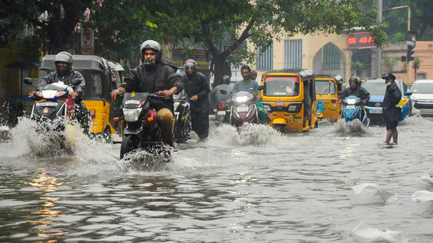

chools have been directed to stay shut in various districts, including Tiruvallur, Madurai, Sivaganga and Kancheepuram. In Madurai, Kancheepuram and Trivallur, colleges have also been asked to stay closed due to incessant rainfall
BJP MP Locket Chatterjee on Sunday was reported to have filed a complaint against West Bengal minister and Trinamool Congress (TMC) leader Akhil Giri.
Amid row over remarks by West Bengal minister and Trinamool Congress (TMC) leader - Akhil Giri - against President Droupadi Murmu, Bharatiya Janata Party (BJP) MP Locket Chatterjee on Sunday was reported to have filed a complaint against him. Chatterjee, who represents West Bengal's Hooghly constituency in Parliament, filed a complaint in Delhi's North Avenue Police Station, news agency ANI reported, urging the authorities to intervene and take immediate action by filing a first information report (FIR) under the Sc
“ Mamata Banerjee should give a statement. Akhil Giri is a minister in her government. She should sack him immediately. She should come to Delhi and apologise," she was quoted as saying by news agency ANI. “They may say a lot about the SC-ST community in public but this is the actual sentiment of their ministers,” she further said. In a video clip, Akhil Giri - while attacking the state’s opposition leader Suvendu Andhakari - is heard saying, “He ( Suvendu Adhikari) says I am not good-looking. How beautiful you are! We don't judge anyone by their appearance, we respect the office of the President (of India). But how does our President look?" HT, however, can't verify the authenticity of the clip